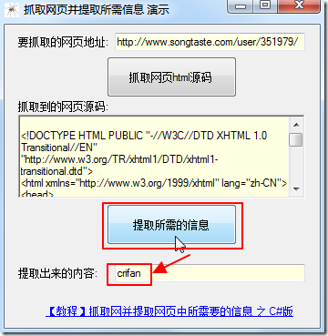

用C#写爬虫
C#中和爬虫相关的内置库有：
- 网络相关
System.NetSystem.IO
- 内容提取解析
- 正则
System.Text.RegularExpressions
- 正则
C#爬虫举例
之前整理过一些C#的爬虫方面的例子。整理于此供参考。
其中后续章节会专门介绍：
C#提取songtaste中h1user的值crifan
完整代码：
using System;
using System.Collections.Generic;
using System.ComponentModel;
using System.Data;
using System.Drawing;
using System.Text;
using System.Windows.Forms;
using System.Net;
using System.IO;
using System.Text.RegularExpressions;
namespace crawlWebsiteAndExtractInfo
{
public partial class frmCrawlWebsite : Form
{
public frmCrawlWebsite()
{
InitializeComponent();
}
private void btnCrawlAndExtract_Click(object sender, EventArgs e)
{
//step1: get html from url
//http://www.songtaste.com/user/351979/
string urlToCrawl = txbUrlToCrawl.Text;
//generate http request
HttpWebRequest req = (HttpWebRequest)WebRequest.Create(urlToCrawl);
//use GET method to get url's html
req.Method = "GET";
//use request to get response
HttpWebResponse resp = (HttpWebResponse)req.GetResponse();
string htmlCharset = "GBK";
//use songtaste's html's charset GB2312 to decode html
//otherwise will return messy code
Encoding htmlEncoding = Encoding.GetEncoding(htmlCharset);
StreamReader sr = new StreamReader(resp.GetResponseStream(), htmlEncoding);
//read out the returned html
string respHtml = sr.ReadToEnd();
rtbExtractedHtml.Text = respHtml;
}
private void btnExtractInfo_Click(object sender, EventArgs e)
{
//step2: extract expected info
//<h1 class="h1user">crifan</h1>
string h1userP = @"<h1\s+class=""h1user"">(?<h1user>.+?)</h1>";
Match foundH1user = (new Regex(h1userP)).Match(rtbExtractedHtml.Text);
if (foundH1user.Success)
{
//extracted the expected h1user's value
txbExtractedInfo.Text = foundH1user.Groups["h1user"].Value;
}
else
{
txbExtractedInfo.Text = "Not found h1 user !";
}
}
private void lklTutorialUrl_LinkClicked(object sender, LinkLabelLinkClickedEventArgs e)
{
string tutorialUrl = "https://www.crifan.com/crawl_website_html_and_extract_info_using_csharp";
System.Diagnostics.Process.Start(tutorialUrl);
}
}
}
运行效果截图：

完整代码（VS2010的项目）下载：
crawlWebsiteAndExtractInfo_csharp_2012-11-07.7z
具体细节详见：
C#爬虫相关通用函数代码段
在折腾C#爬虫期间，把网络功能等常用函数和代码段，整理成独立函数：
且额外加了文档说明：